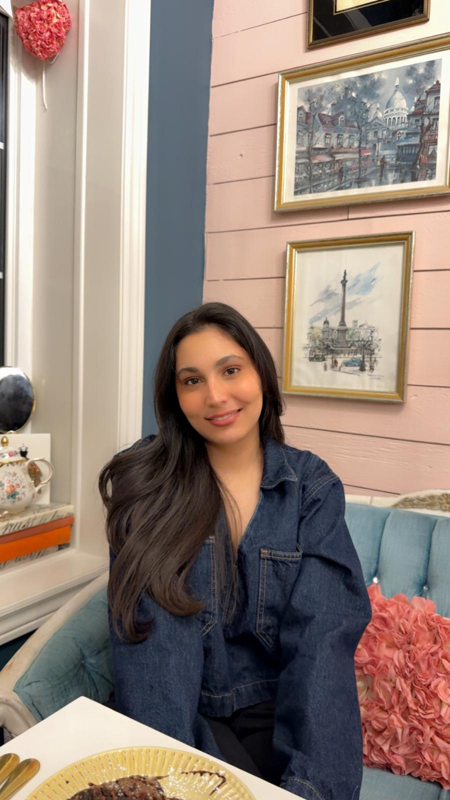

About Me
DESIGN
DESIGN
WITH GUTS
& CLARITY
I'm Japsimran Kaur — a graphic designer and illustrator who cares about making visual work that feels precise, alive, and worth looking at twice.
I gravitate toward structure I can push against, and detail that earns its place. My process starts with hierarchy, composition, and purpose — then I build in the expressive layer through image-making, contrast, and visual tension.
I work across brand identity, illustration, editorial design, packaging, posters, and digital design. No matter the format, I want the work to feel clear, intentional, and visually confident.
Brand Identity
Illustration
Editorial Design
Digital / UI
Typography
Adobe Illustrator
Photoshop
InDesign
Figma

4+
Years studying design
20+
Projects completed
4
Design disciplines
∞
Doodles made